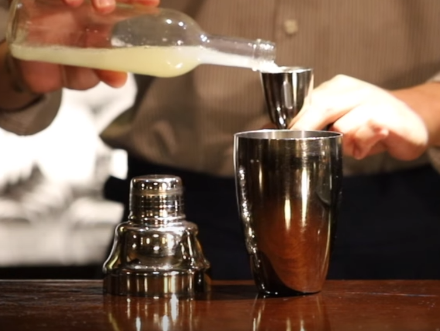
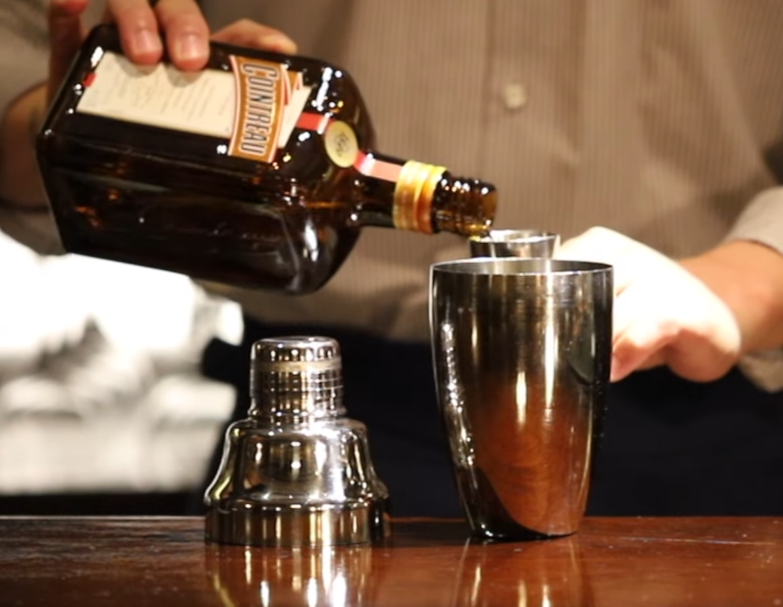
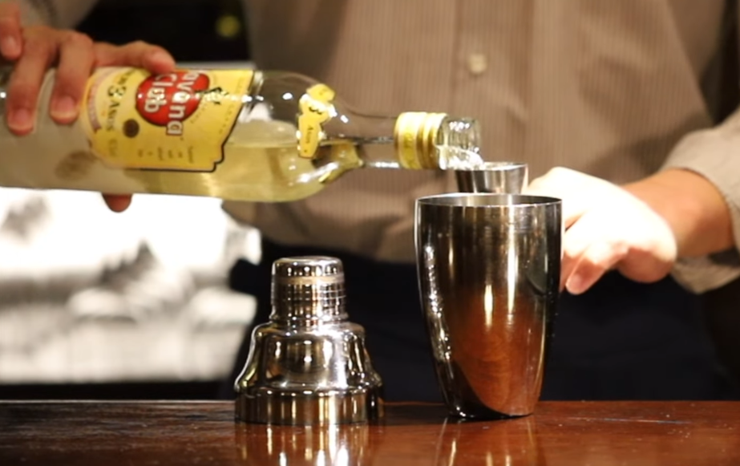
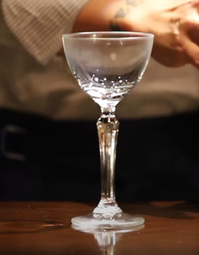
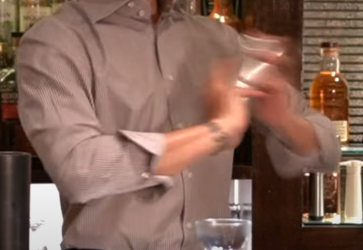
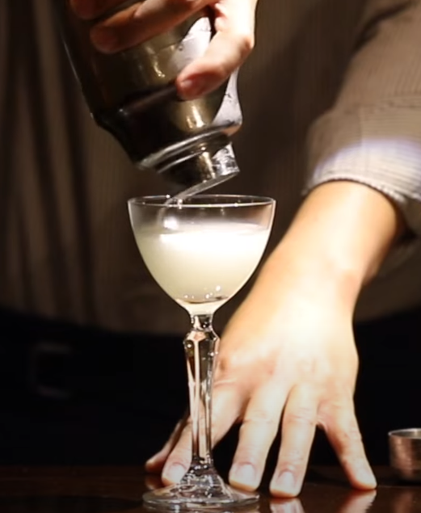
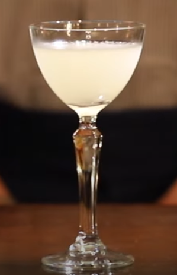
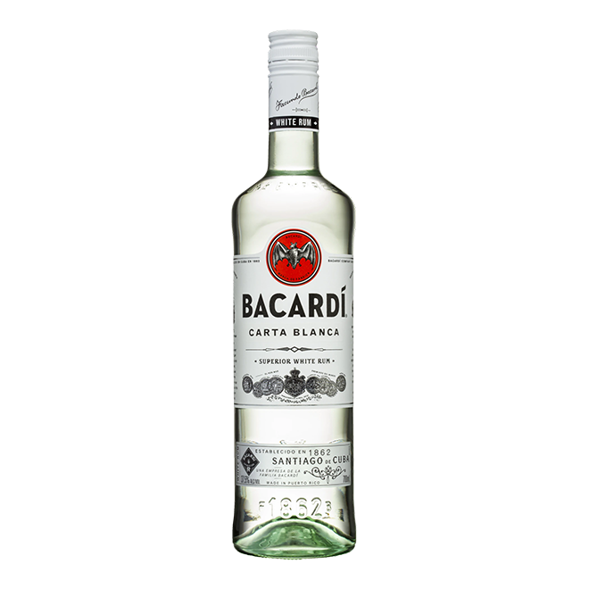
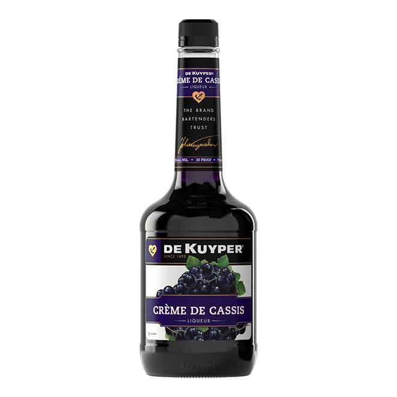

다이키리
| 글라스 | 기법 |
| 마티니 글라스 | 쉐이킹 |
| 가니쉬 | |
| 라임 슬라이스 | |
| 재료 | |
|
라이트 럼 1 3/4oz 라임 주스 3/4oz 설탕 1tsp |
|
하나는 1898년 미국-스페인 전쟁 시기에 엔지니어로 일하던 제닝스 콕스(Jennings Cox)가 산티아고 데 쿠바에 위치한 광산 마을 다이키리(Daiquirí)에서 철광산 노동자들에게 배급되는 바카디 럼에 다양한 재료를 혼합해서 음료를 만들어주곤 했는데, 그게 바로 다이키리였다는 것이다. 또 하나는 제닝스 콕스의 손녀딸이 주장한 가설로, 1896년 쿠바에서 미국에서 온 손님을 대접하던 중 진이 다 떨어지자 대신 럼을 라임, 설탕과 섞어 제공하던 것에서 유래했다는 것이다. 럼 자체가 싸구려 술의 대명사처럼 쓰이던 때이고, 품질도 좋지 않았기 때문에 라임과 설탕으로 이를 감추려는 의도였다고 한다. 아무튼, 창시자가 제닝스 콕스인 것은 마찬가지다.

바카디 칵테일
| 글라스 | 기법 |
| 마티니 글라스 | 쉐이킹 |
| 가니쉬 | |
| 레몬 / 라임 슬라이스 | |
| 재료 | |
|
바카디럼 1 1/5oz 라임즙 2/3oz 그레나딘 시럽 1/3oz |
|
이름답게 바카디의 럼을 광고하기 위해서 만들어졌다. 한 때 이 칵테일을 만들었을 때 바카디 럼을 사용하지 않은 것에 소송을 건 손님이 있었고, 결국 법원에서는 바카디 럼을 사용한 것만이 바카디라는 판결을 내린 바 있다. 역사적으로는 1917년 쿠바에서 유래된 칵테일이다. 초기에는 바카디 럼을 사용해 만든 다이키리를 "바카디" 라고 불렀을 뿐이었고 원래 그레나딘 시럽이 들어가지 않았다. 이 레시피가 미국 금주법 이후 뉴욕에서 인기를 끌게 됨으로서 나중에 그레나딘 시럽이 추가된 것이다. 금주법 이전 칵테일 레시피북을 찾아보면 그레나딘 시럽은 안 보이는 것을 알 수 있다.
피냐콜라다
스페인어로 채에 거른 파인애플이라는 뜻으로 인기있는 트로피컬 칵테일입니다.

| 글라스 |
| 그란데 글라스 |
| 기법 |
| 블렌딩 |
| 가니쉬 |
| 파인애플, 체리 |

| 재료/레시피 |
|
1. 블렌더에 얼음 5~6개정도 넣는다. 2. 화이트럼 1 1/4oz를 넣는다. 3. 피냐 콜라다 믹스 2oz를 넣는다. 4. 파인애플 주스 2oz를 넣는다. 5. 블렌딩 한 후 글라스에 따라준다. 6. 파인애플과 체리로 가니쉬한다. |

X.Y.Z
| 글라스 |
| 칵테일 글라스 |
| 기법 |
| 쉐이킹 |
| 가니쉬 |
| 없음 |
| 재료 |
|
럼 1oz, 트리플섹 혹은 쿠앵트로 1/2oz 레몬 주스 1/2oz |
|  | 1. 쉐이커에 레몬주스 1/2oz를 넣는다. |
| 2. 쉐이커에 쿠앵트로 1/2oz를 넣는다. |  |
|  | 3. 쉐이커에 럼 1oz를 넣는다. |
| 4. 칠링된 마티니 잔을 준비한다. |  |
|  | 5. 쉐이커에 얼음을 넣고 쉐이킹 한다. |
| 6. 칠링된 잔에 따라준다. |  |
|  | 7. 완성~! |
XYZ 이야기
알파벳 마지막 글자들을 모은 X.Y.Z를 이름으로 하는 칵테일인데요. "알파벳의 마지막"의역하자면 " 이 이상의 칵테일은 없다." 혹은 "이것이 마지막 잔이다" "이제 제발 집에가라"라는 의미를 가진 칵테일이랍니다. 마지막을 뜻하는 칵테일인 만큼 다른 음료들을 마시고 나서 마지막잔으로 마셔도 훌륭한 칵테일인데요. 알콜 도수도 꽤 높은 편이진만 맛은 상큼하고 달콤하고 쌉싸름한 맛의 조화가 일품인 칵테일 입니다.

파우스트
괴테의 작품중 <파우스트>의 경우, 괴테가 약 60여 년에 걸쳐 만든 작품으로 유명합니다. 주인공 파우스트 박사가 자기 영혼을 파는 선택을 하게 되면서 시작하는 내용인데요. 악마의 속삭임에 이끌려 선택을 해보지 않겠냐고 제안했을 때, 박사의 마음은 얼마나 복잡했을까요? 분명 맥주 한잔 마시며 인생을 건 베팅을 고민하지는 않았을거예요. 그래서 탄생한 독한 칵테일, '파우스트'입니다.2. 오버프루프 럼 1oz를 넣어주세요.
3. 화이트럼 1oz를 넣어주세요.
4. 크림 드 카시스를 1/2oz를 넣어주세요.
5. 음료가 잘 석이도록 바 스푼으로 저어 마무리합니다.
오버프루프 럼 1oz
화이트 럼 1oz
크림 드 카시스 1/2oz